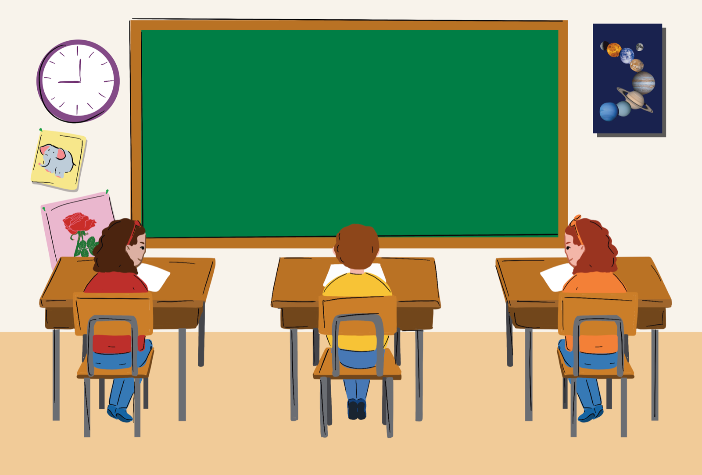

Mjedisi i vendit tim
Ndotja e tokës
Mësuesja u dha detyrë nxënësve që të përgatitnin një projekt me temë sipas dëshirës. Disa nxënës morën për temë instrumentin më të pëlqyer, disa përgatitën projekt për kafshën e dashur e disa për bimët. Hëna po mendonte se cilën temë ta merrte. Dëshironte që të hulumtonte një temë për të cilën nuk kishte shumë informata, por që do të ishte e dobishme për të. Ishte në mes të kafshës më të pëlqyer, bimës më interesante apo trupit të njeriut. Ndërkohë që po mendonte, iu kujtua se këto tri gjallesa kanë diçka të përbashkët. Që të tria jetojnë në Tokë, prandaj ajo mendoi që të hulumtonte për Tokën.
Ndërkohë që po mblidhte informacione për formën e Tokës, origjinën e emrit e karakteristika të tjera, asaj i tërhoqi vëmendjen fjalia: "Në Sistemin Diellor ka tetë planetë dhe VETËM në planetin Tokë është e mundshme jeta për gjallesat".
Fakte, si: sa ka ujë në Tokë, përbërja e ajrit, sateliti natyral i Tokës etj., po i bënin përshtypje Hënës. Ajo mendoi që të ndryshonte temën e projektit, do t'u tregonte shokëve dhe shoqeve të klasës për rëndësinë e planetit Tokë. - Unë mund të bëj gjëra të vogla me dashuri të madhe për planetin tim, - mendoi ajo.
Hëna u përqendrua te veprimet e dëmshme që mund të bëjnë fëmijët ndaj tokës. Ne hedhim mbeturina në tokë. Ne shpenzojmë shumë ujë pa nevojë. Ne nuk riciklojmë. Ne dëmtojmë hapësirat e gjelbëruara kur ecim në bar e jo në rrugën e shtruar. Ne dëmtojmë lulet ndërkohë që duhet të kujdesemi për to.
Në fund të prezantimit të projektit, ajo kërkoi nga shoqet dhe shokët e klasës që të vizatonin diçka që ata mund të bënin ndryshe për të mirën e planetit. Hëna e përmbylli prezantimin duke thënë me zë të lartë: "Është e mira jonë e përbashkët, prandaj duhet ta ruajmë me çdo kusht!".
